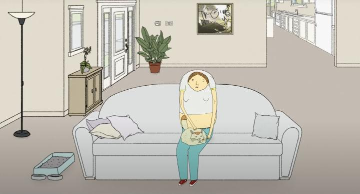

In 2023, the OIAF in Ottawa awarded "When Adam Changes" as their best animated feature submission. It's not the first time I was confused in the jury's choice, and it won't be the last: for me, this was easily the worst movie in the schedule. A short description of the movie is "Napolean Dynamite" with a slight surreal twist, and without any jokes. We're introduced to Adam, now a teenager, who's body seems to transform whenever someone makes a comment judging him. At first, this comes from his cruel grandmother: if she says "he's gotten fat," Adam suddenly gets chubby, and if she says "his hair is greasy," his hair becomes so. This continues throughout his childhood, and in high school, other students, teachers and neighbours contribute to it. Adam has become a tall boy with an awkward build and personality, with little confidence. From the title, I thought this would be about gender identity, but the actual plot was much more banal. To say there IS a plot is generous. It's a slice-of-life school comedy, where Adam works odd jobs (some that go well, some that don't), and slowly tries to gain the confidence to ask out a cute girl from school while dealing with bullies. I never liked these high-school-set movies, and "When Adam Changes" goes the extra mile to make the setting depressing, with a deliberate choice of unusual side-characters. I've heard this described as a "dark-comedy," but still can't figure out where the "comedy" is... maybe it's for people who laugh when something absurdly sad happens to someone? In brief moments, Adam seems to change for the better when he gets a pinch of confidence, with the obvious moral being about "how others see you" and "how you see yourself." This doesn't last long though, before Adam is pulled back down. Seeing Adam get pulled through the mud might be worthwhile if the payoff at the end is good. And there is a payoff moment. It's small and subtle, but sweet. But it's also too little, too late, and leaves Adam not much better off than he was at the beginning. There was opportunity for a lot more to occur for his benefit in the ending, but instead, the script seemed to go with the theme of "life sucks, try your best with the support group you have." I was explicitly annoyed that I sat through 90 minutes of depressing, painful, and sometimes just plain boring scenes to get to that tiny conclusion. Story and writing aside, the film is just ugly to look at. Characters look like they were doodled by someone who failed their high-school art class. Bodies are stiff and awkward, as if they were animated with a pose-skeleton in cheap animation software. Colours are flat and unattractive, possibly inspired by early 2000's MTV or Nickelodeon cartoons that tried a little too hard to be hip for teenage audiences. This was all probably deliberate for the tone and style of the plot, but it further drives home that this movie is gross and plain. Personal bias has a part in this, as the genre just isn't for me. But you can find trailers for "When Adam Changes" and get a sense of the animation and style of writing. If that syncs with your wavelength, by all means seek out the film, it might be an unlikely indie favourite for you. And possibly only you.
- "Ani" More reviews can be found at : https://2danicritic.github.io/ Previous review: review_Welcome_to_the_Space_Show Next review: review_When_Marnie_Was_There